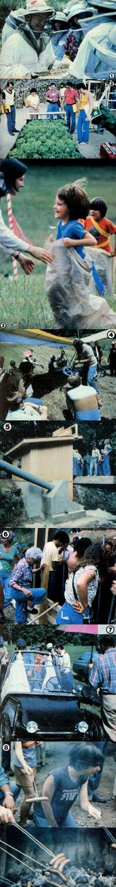

When 1980's first Mother Earth Week ended, we discovered that. . .
Although the 20-plus days preceding our June 1980 Mother Earth Week had been marked by unseasonably hot, dry weather ... our first group of seminar attendees were greeted with a series of much needed (though at times inconvenient) thunderstorms.
It would have taken a good bit more than those few showers, however, to dampen the high spirits that the eager students had brought with them from all over this country and Canada (and even from as far away as Honduras!). The interplay of ideas-between seminar leaders and students, and among the members of almost every random group that formed . . . in lunch lines, after classes, or around the campfire-made for some positively energy-charged experiences!
LET THEM SPEAK FOR THEMSELVES
In fact, after our group of visitors (who accounted for a total of 1,645 classroom seats) headed back to their homes to put their newly gained knowledge to use, MOTHER's staffers were overflowing with enthusiasm. Everyone agreed that the seminar attendees had-almost to a person-felt they'd gotten the information they came for. And seminar evaluation comments such as the following (which were culled from hundreds of similar reviews) flat warmed the cockles of our hearts!
"I learned what I wanted to know and more, and enjoyed being able to actually try things out!" (Bridgeport, Connecticut)
"I came to the seminars not knowing anything about solar heating, and when I left I had accumulated more information than I could ever have gathered by reading books. I really enjoyed it!" (Stafford, Virginia)
"The staff members were unusually people-oriented." (Jacksonville, Florida)
"I'm glad I came, and I'll come again." (Hornell, New York)
"I've gotten more than my money's worth." (Manchester, Connecticut)
"The enthusiasm of the people involved with the seminar made for a very educational and enjoyable three days." (Crestwood, Kentucky)
"I think it's marvelous that you're offering such a variety of courses, and I can't tell you how much I appreciate the opportunity to meet and learn from people who are leading the way to alternatives. Thanks!" (Hot Springs, Arkansas)
"Randy Kidd does a marvelous job of supplying one with the basic information necessary to get started in homesteading. He's so practical!" (Howell, Michigan)
"We profited from the main courses, and the bonus night classes and music were great . . . my family and I were 102% satisfied." (Montrose, Pennsylvania)
"I have never spent a more productive eight hours." (Del City, Oklahoma)
"I knew nothing about the subject matter, and now I feel confident enough to really try cordwood construction." (Madison, Georgia)
"I learned the things that I came for . . . and then some! The love that I felt from the four teachers-both toward us and among one another-was one of the biggest lessons." (Ferndale, Michigan)
"This was an introduction for me into yoga . . . and into some other health and diet alternatives that I had a lot of misconceptions about. I fully intend to use many of the things I learned to raise the quality of my family's life." (Wauseon, Ohio)
"The whole experience was even better than I'd imagined. The class sizes, the scope of the material covered, and the means of teaching used were all excellent. You can't do much better than present a course where hands-on is taught, and the students are given a bibliography to use later on. Bravo!" (Middleport, New York)
"The three days were tremendously beneficial and 'self-expanding'. Thanks! Many thanks!" (Lexington, North Carolina)
"I feel saturated and inspired ... and know that I now have a tremendous number of new decisions to make." (New Orleans, Louisiana)
"The seminars were well researched and well presented. I leave this experience really excited and ready to start building an earth-sheltered home." (Albion, Indiana)
"I knew almost nothing about canning, freezing, or drying food, but now I feel ready to try them all. Thanks . . . the class was fantastic." (Oxford, Michigan)
"Ellie Pruess was able to share not only her knowledge, but her love and enthusiasm for organic gardening as well." (Pottstown, Pennsylvania)
AND THERE WAS MORE!
If the seminar classes themselves left nearly everyone singing praises, there were also many compliments paid to other activities that took place throughout the week ... and particularly to MOTHER'S Child Care Center.
"I had no idea it would be anything like this!" one woman exclaimed. "Had I known, I certainly wouldn't have left my three children at home. I thought it would just be babysitting!"
The children's program, you see, is much more than mere supervision! Under the direction of Nedra Wilson, the young sters participate in mountain crafts, folk dances, outside activities, hikes, table games, field days . . . and enjoy such nationally known entertainers as Richard Chase and others, who provide puppet shows, stories, and songfests.
Nedra was responsible for rounding up some free foot-stompin' entertainment for the grown folks as well, in the form of the Southern Appalachian Cloggers (a highsteppin', fast-paced exhibition team of dancers) accompanied by the Carolina Country Boys (a down-home bluegrass band). Other performers-including the Midnight Plowboys, David Holt, and the Swamp Cats-also got their share of standing ovations.
Then there were the popular nightly miniseminars, during which some of the one-day session leaders presented free two-hour overviews to people who didn't have time to take all the classes that interested them. Amiable Ed Walkinstik was back with his Amazing Solar Chariot, too ... and our Tuesday and Thursday evening old-fashioned wiener roasts, featuring preservative-free hot dogs from Shiloh Farms, have already-in their second season-become something of a "tradition".
All in all, we just couldn't help grinning about the June seminars. ("It was 200% better than last year," said a visiting South Carolinian, who-like many other participants-had returned for a second season.)
WE LEARNED A LOT, TOO
Of course, MOTHER isn't about to rest on her laurels, so the seminar staffers did much more than collect accolades. They were, in fact, particularly eager to hear any suggestions, from attendees, that could help to make our future programs even more productive and exciting. (Some folks, for example, found our opening-day windpower seminar to be too technical and slanted toward large installations ... so corrective measures were taken before the second session was held a few days later.)
As this is written, our July Mother Earth Week is just about to "open for business", and plans for August are well underway. If you missed signing up for either of those, you still have time to participate in our final Mother Earth Week, which will take place September 15-20. We'll be accept ing last-minute registrations right at the door, or-if you'd like to reserve a seat- get in touch with Mother's Seminars im mediately (P.O. Box 70, Hendersonville, North Carolina 28791 ... or telephone 704/693-0211).
And, of course, if you just can't make its to the mountains this year ... we sure hope you'll plan to join us here in 1981!
|
 [1] It's very important to don the proper attire when you study the fine art of beekeeping. [2] Our prolific hydroponic gardens - in MOTHER's unique stackwood dome greenhouse - put on an impressive display. [3] Children found plenty of fun, activity, and entertainment at MOTHER's dynamic day camp. [4] The Pterodactyl's displayed at the Ultralight Aircraft Seminar never failed to attract more than their share of attention. [5] The practicality of a small hydroelectric plant is much easier to comprehend when you can actually see one in operation. [6] A rammed earth structure can be built quickly and easily when this many people are willing to get their hands dirty! [7] With gas prices going up, there was always a great deal of interest in MOTHER's various high-mileage vehicles. [8] Our hot dog roasts were a perfect place to make friends. |
|
|